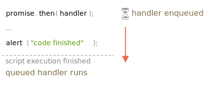

Promise 的处理程序（handlers）.then、.catch 和 .finally 都是异步的。
即便一个 promise 立即被 resolve，.then、.catch 和 .finally 下面 的代码也会在这些处理程序（handler）之前被执行。
示例代码如下：
let promise = Promise.resolve();
promise.then(() => alert("promise done!"));
alert("code finished"); // 这个 alert 先显示如果你运行它，你会首先看到 code finished，然后才是 promise done。
这很奇怪，因为这个 promise 肯定是一开始就完成的。
为什么 .then 会在之后才被触发？这是怎么回事？
异步任务需要适当的管理。为此，ECMA 标准规定了一个内部队列 PromiseJobs，通常被称为“微任务队列（microtask queue）”（ES8 术语）。
如 规范 中所述：
或者，简单地说，当一个 promise 准备就绪时，它的 .then/catch/finally 处理程序（handler）就会被放入队列中：但是它们不会立即被执行。当 JavaScript 引擎执行完当前的代码，它会从队列中获取任务并执行它。
这就是为什么在上面那个示例中 "code finished" 会先显示。

Promise 的处理程序（handler）总是会经过这个内部队列。
如果有一个包含多个 .then/catch/finally 的链，那么它们中的每一个都是异步执行的。也就是说，它会首先进入队列，然后在当前代码执行完成并且先前排队的处理程序（handler）都完成时才会被执行。
如果执行顺序对我们很重要该怎么办？我们怎么才能让 code finished 在 promise done 之后运行呢？
很简单，只需要像下面这样使用 .then 将其放入队列：
Promise.resolve()
.then(() => alert("promise done!"))
.then(() => alert("code finished"));现在代码就是按照预期执行的。
还记得 info:promise-error-handling 一章中的 unhandledrejection 事件吗？
现在，我们可以确切地看到 JavaScript 是如何发现未处理的 rejection 的。
如果一个 promise 的 error 未被在微任务队列的末尾进行处理，则会出现“未处理的 rejection”。
正常来说，如果我们预期可能会发生错误，我们会在 promise 链上添加 .catch 来处理 error：
let promise = Promise.reject(new Error("Promise Failed!"));
promise.catch(err => alert('caught'));
// 不会运行：error 已经被处理
window.addEventListener('unhandledrejection', event => alert(event.reason));但是如果我们忘记添加 .catch，那么，微任务队列清空后，JavaScript 引擎会触发下面这事件：
let promise = Promise.reject(new Error("Promise Failed!"));
// Promise Failed!
window.addEventListener('unhandledrejection', event => alert(event.reason));如果我们迟一点再处理这个 error 会怎样？例如：
let promise = Promise.reject(new Error("Promise Failed!"));
setTimeout(() => promise.catch(err => alert('caught')), 1000);
// Error: Promise Failed!
window.addEventListener('unhandledrejection', event => alert(event.reason));现在，如果我们运行上面这段代码，我们会先看到 Promise Failed!，然后才是 caught。
如果我们并不了解微任务队列，我们可能会想：“为什么 unhandledrejection 处理程序（handler）会运行？我们已经捕获（catch）并处理了 error！”
但是现在我们知道了，当微任务队列中的任务都完成时，才会生成 unhandledrejection：引擎会检查 promise，如果 promise 中的任意一个出现 "rejected" 状态，unhandledrejection 事件就会被触发。
在上面这个例子中，被添加到 setTimeout 中的 .catch 也会被触发。只是会在 unhandledrejection 事件出现之后才会被触发，所以它并没有改变什么（没有发挥作用）。
Promise 处理始终是异步的，因为所有 promise 行为都会通过内部的 "promise jobs" 队列，也被称为“微任务队列”（ES8 术语）。
因此，.then/catch/finally 处理程序（handler）总是在当前代码完成后才会被调用。
如果我们需要确保一段代码在 .then/catch/finally 之后被执行，我们可以将它添加到链式调用的 .then 中。
在大多数 JavaScript 引擎中（包括浏览器和 Node.js），微任务（microtask）的概念与“事件循环（event loop）”和“宏任务（macrotasks）”紧密相关。由于这些概念跟 promise 没有直接关系，所以我们将在本教程另外一部分的 info:event-loop 一章中对它们进行介绍。